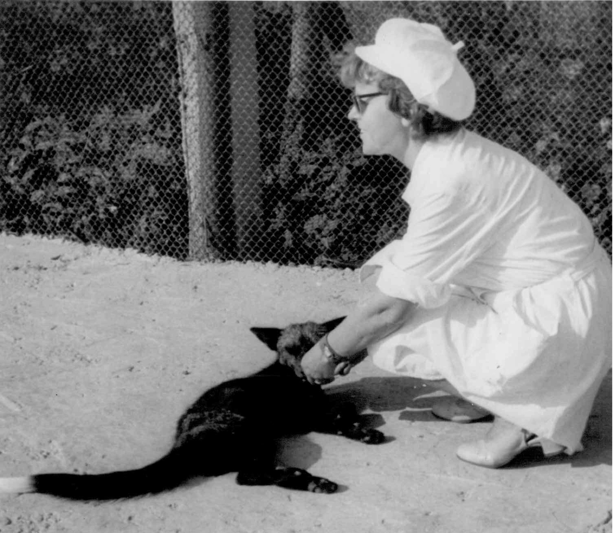

인간은 스스로를 길들인 동물일까? — 자기가축화 가설로 보는 협력의 기원
"사람은 원래 폭력적인 동물이에요."
역사책의 전쟁과 저녁 뉴스의 범죄를 보면 그 말이 맞는 것 같습니다. 비행기 안을 보면 이야기가 달라집니다. 낯선 사람 수백 명이 좁은 비행기에 열 시간 넘게 앉아 있습니다. 옆 사람이 팔걸이를 차지하고, 앞사람이 좌석을 뒤로 젖히고, 아이가 웁니다. 그래도 피가 나는 싸움은 거의 일어나지 않습니다. 침팬지 수백 마리를 같은 자리에 태우면 착륙할 때까지 싸움이 그치지 않을 것입니다. 영장류학자 리처드 랭엄(Richard Wrangham)은 이 대비를 즐겨 듭니다. 그에 따르면 사람은 낯선 이와 몸을 부대끼며 참아 내는 데 능합니다. 그런 사람이 바로 그 비행기를 떨어뜨리려는 음모를 막으려고 공항마다 검색대를 세웁니다[1].
사람은 영장류 가운데 가장 온순하지만, 살해는 가장 치밀하게 계획합니다.
이 모순을 한 줄로 풀어 보려는 가설이 있습니다. 사람이 개와 소를 길들였듯 누군가 사람도 길들였다는 가설입니다. 바깥에 주인은 없었습니다. 사람의 무리가 사람을 길들였습니다. 이것을 자기가축화(self-domestication) 가설이라 부릅니다. 사람의 협력을 설명하는 이야기 가운데 눈길을 끄는 가설이지만 아직 '가설'에 머뭅니다. 연구자들이 확인한 것과 추측한 것을 갈라 가며 보겠습니다.
여우 농장에서 벌어진 일
1950년대 말, 시베리아 노보시비르스크의 한 연구소에서 유전학자 드미트리 벨랴예프(Dmitry Belyaev)가 은여우를 모았습니다. 그가 번식시킬 여우를 고르는 기준은 하나뿐이었습니다. 사람이 다가갔을 때 물거나 달아나지 않고 얼마나 온순하게 구느냐였습니다. 연구진은 세대마다 가장 온순한 10% 미만만 부모로 골랐습니다[2].
결과는 빨리 나왔습니다. 4세대째에 개처럼 꼬리를 흔드는 여우가 나왔습니다. 6세대째에는 사람을 보면 낑낑대며 먼저 다가오는 여우가 나왔습니다. 연구진은 이 가장 온순한 부류를 '엘리트'라 불렀습니다. 엘리트는 6세대에 100마리 중 두 마리꼴(1.8%)이었습니다. 10세대에 18%, 20세대에 35%, 30세대에 49%로 늘었습니다. 2000년대 중반에는 거의 전부가 엘리트였습니다[2].

아무도 고르지 않은 변화도 따라왔습니다. 귀가 처지고 꼬리가 말렸습니다. 이마와 가슴에 흰 얼룩이 생겼습니다. 주둥이가 짧아지고 머리뼈가 넓어졌습니다. 몸속도 바뀌었습니다. 스트레스 호르몬인 코르티솔은 20세대에 농장 여우의 절반 수준으로, 45세대에는 3분의 1 수준으로 내려갔습니다. 뇌 속 세로토닌은 올라갔습니다. 번식기도 느슨해져 제철이 아닌 때 짝짓는 암컷이 나왔습니다[2].
다윈은 여러 가축에게서 이 공통된 변화를 이미 알아챘습니다. 여우는 수십 년 만에 그 변화를 다시 보여 주었습니다. 생물학은 이 묶음을 가축화 증후군(domestication syndrome)이라 부릅니다. 2014년 윌킨스·랭엄·피치는 이 묶음이 왜 한꺼번에 오는지를 원리 하나로 설명했습니다. 배아 발생 초기에 얼굴뼈·귀 연골·색소세포·부신을 함께 만들어 내는 세포 무리가 있습니다. 신경능선세포(neural crest cell)입니다. 이 세포가 조금 모자라면 이 변화들이 한꺼번에 나타난다는 것입니다[3]. 온순함을 고르는 사람은 겁을 덜 내는 개체, 곧 부신이 작은 개체를 뽑습니다. 부신을 만드는 세포는 귀와 얼굴과 털색도 만듭니다. 그래서 나머지 변화가 함께 따라옵니다.
공격성은 하나가 아니다
그러니 질문을 바꿔야 합니다. "사람은 폭력적인가, 온순한가"라는 질문을 버리고 "어떤 종류의 폭력이 줄었고 어떤 종류가 남았는가"를 물어야 합니다.
랭엄은 공격성을 둘로 나눕니다[4]. 첫째는 반응적 공격성(reactive aggression)입니다. 도발을 받는 순간 욱해서 손이 먼저 나가는 폭력입니다. 둘째는 주도적 공격성(proactive aggression)입니다. 목적을 정하고 때를 골라, 상대가 손쓸 수 없을 때 치는 폭력입니다.
이렇게 나누면 침팬지와 보노보와 사람을 한 그림에 놓을 수 있습니다. 침팬지는 두 공격성이 모두 높고 보노보는 모두 낮은 편입니다. 사람은 반응적 공격성에서는 보노보에 가깝고, 주도적 공격성에서는 침팬지에 가깝습니다[4]. 그래서 좁은 비행기에서 참아 내는 사람이 공항에는 검색대를 세웁니다.
길든 여우는 바로 이 반응적 공격성을 잃었습니다. 사람이 다가올 때 일어나는 공포와 분노의 반사입니다. 자기가축화 가설은 사람도 진화의 후반에 같은 것을 잃었다고 봅니다. 계획한 폭력은 그대로 남았습니다. 전쟁에서의 살해가 대부분 주도적 공격성이라는 점이 그 증거입니다[4].
얼굴과 유전자에 남은 지문
가설이 맞다면 여우의 얼굴이 바뀌었듯 사람의 얼굴도 바뀌었어야 합니다. 2014년 시에리(Robert Cieri)와 동료들은 두개골 1,400여 점을 재어 이 예측을 시험했습니다. 8만 년보다 오래된 현생인류 두개골 13점, 1만~3만 8천 년 전 두개골 41점, 그리고 20세기에 수집한 30개 집단의 두개골 1,367점입니다. 시대가 내려올수록 눈썹 위의 뼈가 낮아지고 윗얼굴이 짧아졌습니다. 이 두 변화는 뼈에 작용하는 남성호르몬 테스토스테론의 영향이 줄 때 나타납니다[5]. 연구진은 이 변화가 약 5만 년 전부터 뼈 도구와 투창, 낚시 도구와 예술이 넓게 퍼진 시기와 맞물린다고 봤습니다. 낯선 이를 더 잘 참는 집단이 더 빽빽하게 모여 살면서 더 많이 배우고 전했다는 해석입니다[5].
다만 이 연구에는 한계가 있습니다. 가장 오래된 묶음은 열세 점뿐입니다. 뼈만으로는 호르몬이 얼마나 돌았는지 직접 알 수 없습니다. 먹을거리의 변화 같은 다른 요인이 얼굴을 바꿨을 수도 있습니다[5].
유전자에서 흔적을 찾은 연구도 있습니다. 2017년 테오파누풀루(Constantina Theofanopoulou)와 동료들은 유전자 목록 두 개를 포개 봤습니다. 첫째 목록은 네안데르탈인·데니소바인과 견주어 현생인류에서 선택이 작용한 유전자 742개입니다. 둘째 목록은 개·고양이·말·소가 야생 조상과 갈라질 때 선택이 작용한 유전자 691개입니다. 41개가 겹쳤고, 우연으로 보기 어려운 수준이었습니다. 침팬지·고릴라·오랑우탄이나 늑대·들소 같은 대조군에서는 그런 겹침이 나오지 않았습니다. 겹친 유전자 가운데에는 신경능선세포의 발달에 관여하는 것들이 있었습니다[6]. 저자들은 서로 다른 방법으로 만든 목록을 포갰으므로 실험으로 검증해야 한다고 단서를 달았습니다.
그렇다면 누가 길들였는가
여우는 벨랴예프가 길들였습니다. 사람을 누가 길들였는지가 이 가설에서 가장 어려운 대목입니다.
실마리는 보노보에게 있습니다. 2012년 헤어(Brian Hare)·워버·랭엄은 보노보가 침팬지보다 공격성이 낮은 까닭을 느슨한 먹이 경쟁에서 찾았습니다. 먹이 다툼이 덜하면 사나운 개체가 얻는 이득이 줄고, 세대를 거듭하며 공격성이 줄어듭니다. 그 결과 보노보는 어린 시절의 특징을 오래 간직하는 등, 가축이 야생 조상과 다른 바로 그 방식으로 침팬지와 달라졌다는 것입니다. 저자들은 그 차이의 많은 부분이 적응이 아닌 부산물일 수 있다고 봤습니다[7]. 주인이 없어도 가축화 증후군이 생길 수 있다는 사례입니다.
랭엄은 사람의 주인으로 '말을 가진 무리'를 제시합니다[1]. 언어가 생기자 약한 개체들이 몰래 뜻을 모을 수 있었습니다. 폭군은 반응적 공격성이 높은 개체입니다. 약한 개체들은 어느 날 무리를 괴롭히던 폭군을 둘러싸고 처형합니다. 처형은 주도적 공격성 가운데서도 가장 계획적인 폭력입니다. 공격으로 공격을 줄인다는 말은 모순으로 들립니다. 랭엄은 두 공격성을 가르면 이 '사형의 역설'이 풀린다고 봅니다. 무리는 계획해서 폭군을 처형했고, 폭군은 욱해서 움직이다 죽었습니다. 세대를 거듭하면 욱하는 성미는 줄고 계획하는 능력은 남습니다[4].
이 설명은 앞뒤가 맞습니다. 그러나 화석에 처형의 기록은 남지 않습니다. 이 대목은 여우 실험과 보노보와 얼굴뼈에서 얻은 조각들을 잇는 추론입니다. 누구도 직접 확인하지 못했습니다.
협력이라는 이득, 그리고 치른 값
스스로를 길들인 사람은 협력하는 능력을 얻었습니다. 헤어는 2017년 종설에서 이렇게 정리했습니다. 사람의 진화 후반에 집단 안의 친사회성이 공격성을 누르는 쪽으로 선택이 일어났습니다. 그 선택이 남의 마음을 읽고 함께 뜻을 맞추는 능력, 나아가 언어와 문화를 떠받쳤습니다[8]. 참는 능력이 먼저 있어야 서로에게서 배우는 무리가 생깁니다.
사람들은 반대편 사례로 종종 네안데르탈인을 듭니다. 2014년 한 연구진이 시베리아 알타이 동굴에서 나온 네안데르탈 여성의 게놈을 읽고 두 가지를 알아냈습니다. 그녀의 부모는 이복형제 수준으로 가까운 사이였습니다. 가까운 친척끼리의 짝짓기는 최근 조상들 사이에서도 흔했습니다[9]. 작은 무리가 좁은 범위 안에서 살았다는 뜻으로 읽을 수 있습니다. 다만 이 결과를 '길들지 않아서'라고 읽으면 해석이 지나칩니다. 게놈에는 그런 정보가 없습니다.
치른 값도 있습니다. 처형으로 스스로를 길들인 무리는 규칙을 어기는 자를 벌하는 습관도 함께 물려받았을 것입니다. 가장 큰 값은 앞에서 본 대로입니다. 계획한 폭력은 줄지 않았습니다. 좁은 비행기에서 참는 동물이 비행기를 떨어뜨릴 계획도 세웁니다.
이 가설은 얼마나 단단한가
사람이 스스로를 길들였다는 생각은 오래됐습니다. 1800년 무렵 독일의 블루멘바흐가 처음 꺼냈습니다. 다윈은 받아들이지 않았고, 그 뒤 진화생물학자 대부분도 마찬가지였습니다[10]. 여우 실험과 신경능선 가설이 '온순함을 고르면 몸이 따라 바뀐다'는 연결을 보여 준 뒤에야 가설이 다시 살아났습니다.
필자 한마디
"사람은 원래 폭력적이다"와 "사람은 원래 선하다"는 둘 다 절반만 맞습니다. 두 주장 모두 공격성을 한 덩어리로 봅니다. 그래서 수백 년 동안 서로를 반박하지 못했습니다.
"우리를 길들인 것은 우리 자신입니다." 무리가 욱하는 성미를 줄였고, 그 수단은 계획한 처형이었습니다. 이 가설에 따르면 관용과 처형은 같은 과정에서 나왔습니다. 불편하지만 쓸모 있는 설명입니다.
붐비는 지하철에서 남이 발을 밟아도 아무 말 없이 참는 사람을 보시면 이 가설을 떠올려 보시기 바랍니다. 사람은 수만 년에 걸쳐 그 참을성을 얻었을지도 모릅니다.
여우 실험은 온순함 하나만 골라도 얼굴과 귀와 호르몬이 함께 바뀐다는 것을 보여 주었습니다. 연구자들은 사람의 두개골과 유전자에서 비슷한 특징을 찾았습니다. 사람은 욱하는 반응적 공격성만 낮고 계획된 주도적 공격성은 높습니다. 랭엄은 말을 가진 무리가 폭군을 처형하면서 반응적 공격성만 줄였다고 봅니다. 여우와 얼굴뼈와 유전자는 연구자들이 자료로 확인한 조각입니다. 그 조각을 잇는 처형 이야기는 아직 추론입니다.
오늘 화를 참은 순간이 있었다면, 그때 무엇이 자신을 멈춰 세웠는지 따져 보시기 바랍니다.
참고문헌
- Wrangham, R. The Goodness Paradox: The Strange Relationship Between Virtue and Violence in Human Evolution. Pantheon, 2019. (서평·서지: Kirkus Reviews) 링크 ↩
- Trut, L., Oskina, I., Kharlamova, A. Animal evolution during domestication: the domesticated fox as a model. BioEssays 31(3): 349–360, 2009. 링크 ↩
- Wilkins, A. S., Wrangham, R. W., Fitch, W. T. The "domestication syndrome" in mammals: a unified explanation based on neural crest cell behavior and genetics. Genetics 197(3): 795–808, 2014. 링크 ↩
- Wrangham, R. W. Two types of aggression in human evolution. Proceedings of the National Academy of Sciences 115(2): 245–253, 2018. 링크 ↩
- Cieri, R. L., Churchill, S. E., Franciscus, R. G., Tan, J., Hare, B. Craniofacial Feminization, Social Tolerance, and the Origins of Behavioral Modernity. Current Anthropology 55(4): 419–443, 2014. 링크 · 듀크대 보도자료(ScienceDaily 전재, 2014-08-01) 링크 ↩
- Theofanopoulou, C. 등. Self-domestication in Homo sapiens: Insights from comparative genomics. PLOS ONE 12(10): e0185306, 2017. 링크 ↩
- Hare, B., Wobber, V., Wrangham, R. The self-domestication hypothesis: evolution of bonobo psychology is due to selection against aggression. Animal Behaviour 83(3): 573–585, 2012. 링크 ↩
- Hare, B. Survival of the Friendliest: Homo sapiens Evolved via Selection for Prosociality. Annual Review of Psychology 68: 155–186, 2017. 링크 ↩
- Prüfer, K. 등. The complete genome sequence of a Neanderthal from the Altai Mountains. Nature 505: 43–49, 2014. 링크 ↩
- 위키백과. The Goodness Paradox (백과). 링크 ↩
- Sánchez-Villagra, M. R., van Schaik, C. P. Evaluating the self-domestication hypothesis of human evolution. Evolutionary Anthropology 28(3): 133–143, 2019. 링크 ↩